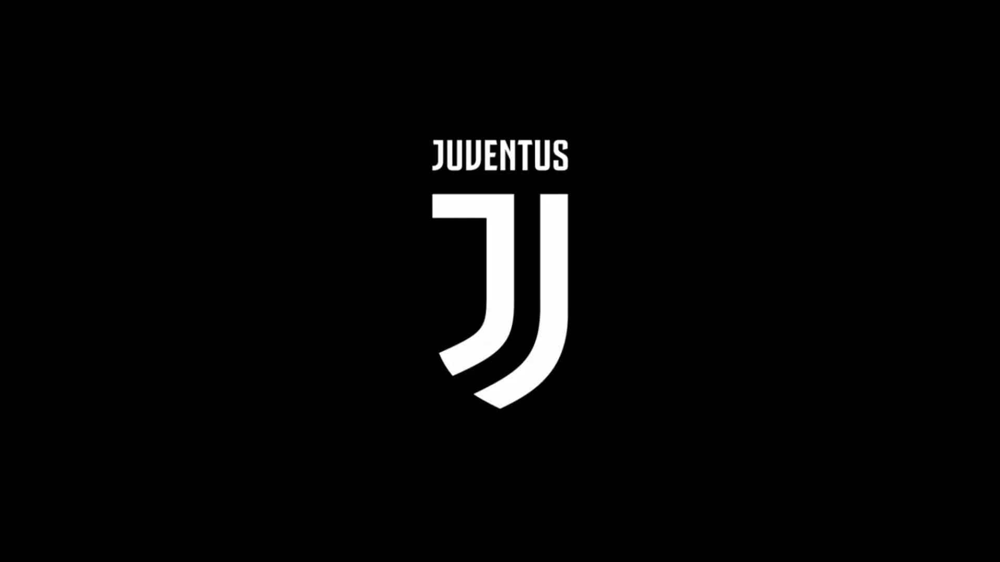

La Juventus Football Club (dal latino iuventūs, "gioventù"), meglio nota come Juventus (/juˈvɛntus/),[1] è una società calcistica italiana della città di Torino. Milita in Serie A, la massima divisione del campionato italiano. Fondata nel 1897 da un gruppo di studenti liceali locali,[2] la Juve (pronunciato [ˈjuːve]) – com'è colloquialmente abbreviata[3] – è il secondo club professionistico per anzianità tra quelli tuttora attivi nel Paese, dopo il Genoa (1893); è il più titolato e con maggior tradizione sportiva oltreché uno dei più blasonati al mondo con 71 trofei ufficiali vinti durante la militanza al vertice della piramide sportiva nazionale, tra cui il primato di 36 titoli di campione d'Italia e 11 in competizioni UEFA.[4] Prende parte stabilmente al massimo campionato nazionale sin dall'esordio nel 1900, eccezione fatta per la stagione 2006-2007. Dopo aver esordito in divisa rosanero, ai primi del Novecento adottò l'odierna tenuta di gioco bianconera.[5]
Clicca il logo per tornare indietro